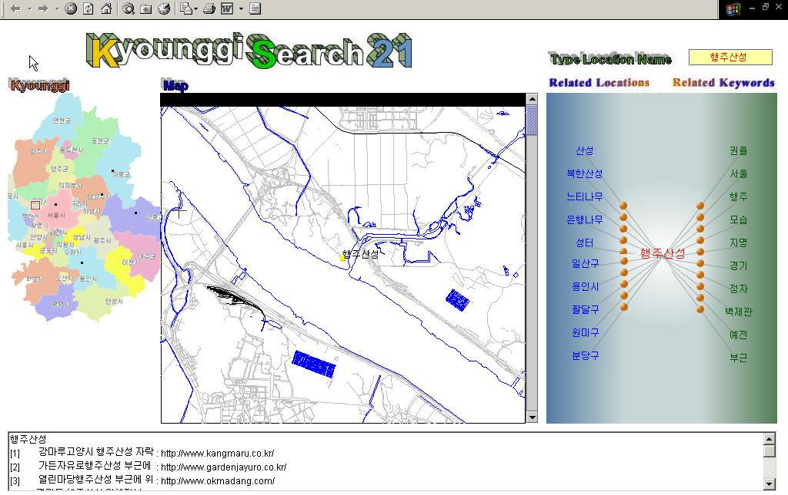
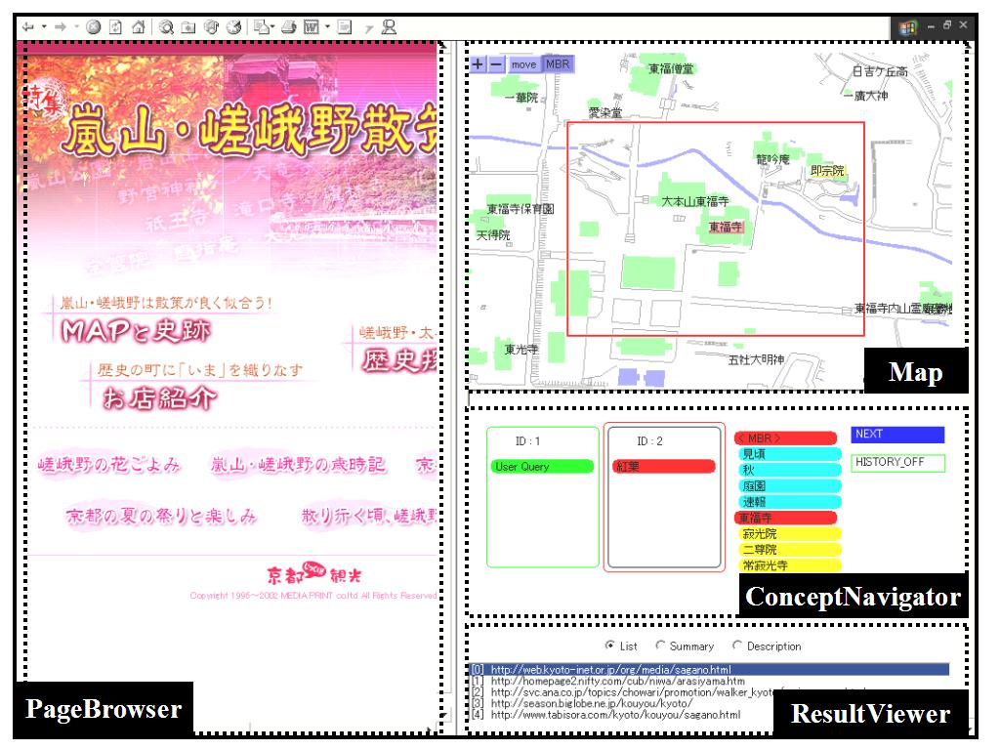

先に述べたように，地域情報コンテンツの検索を地図と概念インタフェースの統合によって実現するシステムとして，京都を対象地域とした「KyotoSEARCH-I」を開発した．我々はこのシステムを異なる地域・異なる言語へ拡張するため，韓国の共同研究グループ（韓国科学技術部・韓国科学財団指定 韓国航空大学インターネット情報検索センター 権容珍 教授）の協力によって韓国・ソウルを含む京畿道を対象地域とした「KyounggiSearch21」の開発を行なった（図１）．京都と韓国・京畿道の二つの地域を対象として進められた開発は，他都市への転用が十分可能であることを示した．

図１. KyounggiSearch21のユーザインタフェース
これまでの結果をふまえて，より大規模な情報の提供とユーザインタフェースの改良を主な目的として，「KyotoSEARCH-II」の開発を行なった（図２）．新システムにおいては，以下の点が拡張されている．
1.Range Queryと空間的ウェブ索引
従来のウェブ検索において，空間的に限定された情報の取得は地名等のキーワードを指定することで行なわれていた．しかし，より直感的に分かりやすいインタフェースとして，地図上で範囲指定を行なうという方法が考えられる．我々のシステムではこのようなRange Queryとそれに対応した空間的索引の生成機能を実現している．ウェブページを，含まれる地名に基づいて地図上にマッピングし，MBR（Minimum Bounding Rectangle）を得ている．MBRに対してはR-Treeという二次元データのインデックスが利用できるため，ユーザが指定した領域に関連するウェブページを短時間で検索し提供することが可能である．
2.ConceptQUERYと質問履歴
本システムにおいては位置の指定方法として地名とRangeの二種類が用意されているが，ユーザは検索条件として非地名を入力することも可能である．そのため，ユーザの質問を「空間に関わる概念的な質問（ConceptQUERY）」として扱い，現実空間の場所と非地名のキーワードとを結合した質問を作成できるようにしている．さらに，KyotoSEARCH-ⅠとKyounggiSearch21において提供されていた関連地名・非地名の選択機能に加え，質問履歴によって過去の質問結果を活用して検索を行なえるようになっている．これらの改善されたインタフェースによって，ユーザの利便性が向上している．

図２. KyotoSEARCH-IIのユーザインタフェース
文献：
Yahiko Kambayashi, Ryong Lee, and Taro Tezuka. Generation of Location-Related Knowledge from Web Content. NSF-OntoWeb Invitational Workshop on DB-IS Research for Semantic Web and Enterprises, pp.40-50, 2002.
Ryong Lee, Yohsuke Inoue, Taro Tezuka, Naoharu Yamada, Hiroki Takakura and Yahiko Kambayashi. Kyoto SEACH: A Concept-based Geographic Web Search Engine. Proceedings of 2002 IRC International Conference on Internet Information Retrieval, pp.119-126, 2002.
連絡先：
京都大学 社会情報学専攻 手塚太郎 tezuka at dl.kuis.kyoto-u.ac.jp
横田裕介 yyokota at i.kyoto-u.ac.jp